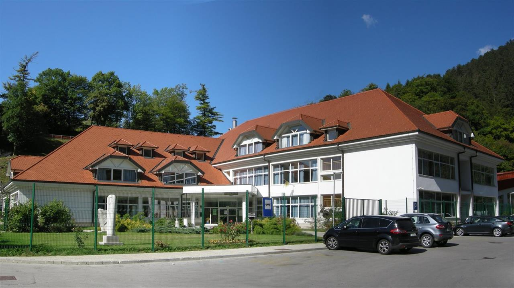
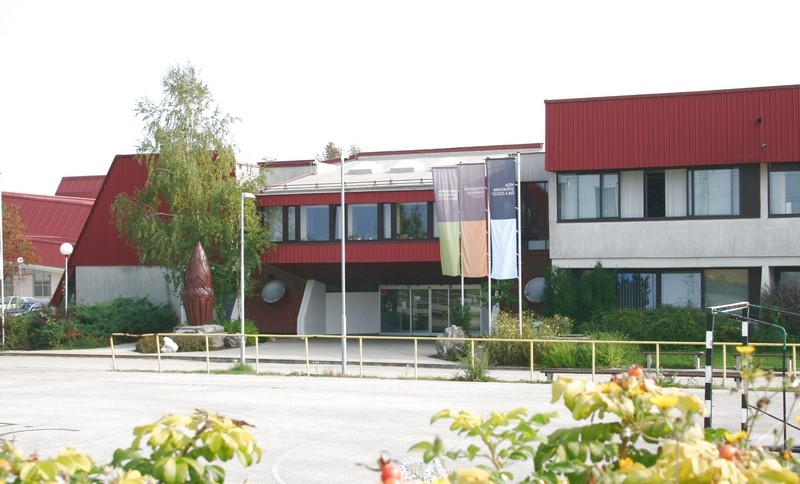

After 9 years of primary school my attention was focused mostly into computers.
Due to my good grades everyone wanted me to go to a higher level school but I choose a computer school lovingly called "Iskra" in Kranj. There I completed a 4 year computer technician course. There I learned basics of programing in C#, HTML, CSS and some JS.
After the completed program I continued in the direction of programing so I applied to the "FRI" university in Ljubljana, where I enjoyed my short stay.
Sadly due to personal loss and everything that comes with it I couldnt complete the first year as I just lost motivation. I did however learn small ammounts of Java and some Python to go with it aswell as basic Assembly.
Later I applied back to my highschool to start attending their college program where I am now.
Due to my good grades everyone wanted me to go to a higher level school but I choose a computer school lovingly called "Iskra" in Kranj. There I completed a 4 year computer technician course. There I learned basics of programing in C#, HTML, CSS and some JS.
After the completed program I continued in the direction of programing so I applied to the "FRI" university in Ljubljana, where I enjoyed my short stay.
Sadly due to personal loss and everything that comes with it I couldnt complete the first year as I just lost motivation. I did however learn small ammounts of Java and some Python to go with it aswell as basic Assembly.
Later I applied back to my highschool to start attending their college program where I am now.